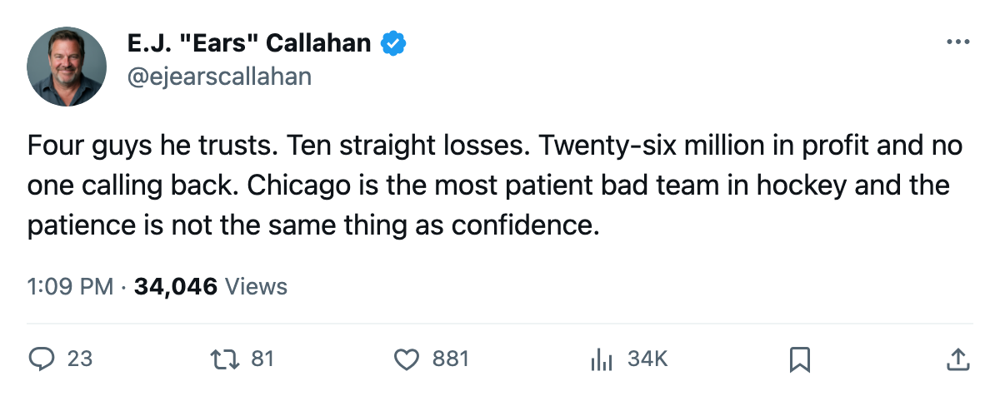
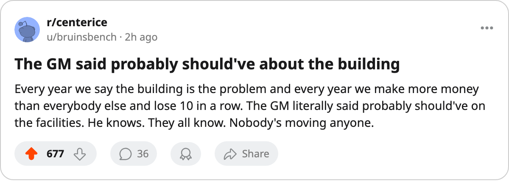

RUMOR METER: Chicago Says It Won't Sell Its Blue Line. The Room Has Lost 10 Straight and Reads 89.1. 🔥🔥
The GM of the league's worst team told The Tunnel his defensemen aren't going anywhere. The market has 122 days to change his mind.
 E.J. "Ears" CallahanInsider · The Hot Stove
E.J. "Ears" CallahanInsider · The Hot Stove

Chicago blue-line availability

The piece
Chicago is 2-9-4 with 10 points, a 10-game losing streak and a 1-9 record at home. The general manager told the room on November 16 that his blue line is unavailable. The trade market does not listen to no in November. It waits for March.
"I'm not trading bodies off a roster that's already thinned out," Jason Hughes said after the game, on The Tunnel. "Quint is out till November 24 with the ankle, Henry is back, the back end is... we've got four guys we trust and that's it."
Four guys. That was his ceiling in front of the media. He did not raise it.
The read at the Hot Stove:  Chicago Blackhawks runs a $48.74M payroll against 10 points, a $4.87M per point that ranks third-worst behind Ottawa at $5.39M and Phoenix at $5.04M. They still cleared $26.43M in profit, sixth-highest in the league. Profit means patience. Profit also means a front office that can justify doing nothing for 122 more days while the room rots.
Chicago Blackhawks runs a $48.74M payroll against 10 points, a $4.87M per point that ranks third-worst behind Ottawa at $5.39M and Phoenix at $5.04M. They still cleared $26.43M in profit, sixth-highest in the league. Profit means patience. Profit also means a front office that can justify doing nothing for 122 more days while the room rots.
The room is already close to that. Chicago's club morale reads 89.1 on the Bureau's Morale Scale, fifth-lowest in the league. Chris Schmidt59 sits at 72, fourth-worst in hockey, on a $0.91M deal with 3 years remaining. He has played 0 games in 3 seasons under contract.
What does the market want from a 2-9-4 club that won't trade its defensemen? Forwards, presumably, or a pick. Chicago holds 5 picks and 1 first-round choice. That's the league median. They are not stockpiling. They are surviving.
The Quint window changes nothing
Deron Quint73 returns from a groin on November 24, according to the league's designation. That gives the coach a fifth body on the back end before what the calendar has as the trade deadline. Hughes said he has four he trusts. A fifth coming back is not a sixth. It is not even a replacement for the one they lost to injury six weeks ago.
A league source said one club in the Pacific Division floated a second-round package for a Chicago defenseman in the week of November 7 and got no callback. The source added that the phone has rung more than once.
Hughes told The Tunnel he should've upgraded the building two years ago. "Probably should've," he said. "But I've watched clubs throw money at a building while the roster's still no good."
The roster is 2-9-4. The building is not the problem that trades fix. The blue line might be.
A second source at the Meadowlands said this: any club that calls Chicago between now and the deadline should expect silence, then a price so high it reads as a refusal. That source said the same thing about Carolina three weeks ago, and Carolina is still selling.

